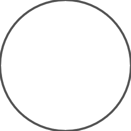
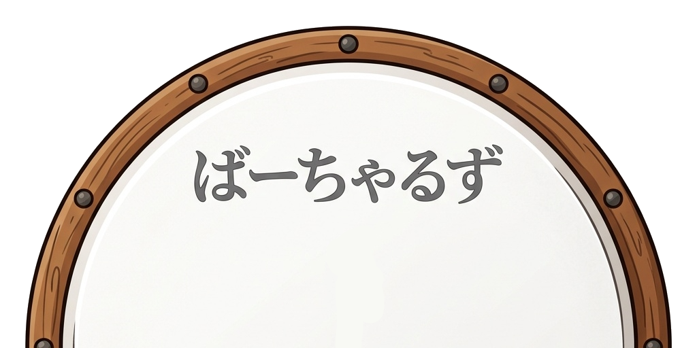

ワールド: -
座標: 0, 0, 0
プレイヤー数: 0
譜面がありません


ドン … F キー（左） / J キー（右）
カッ … D キー（左） / K キー（右）
マウスで太鼓・青い部分をクリックしても入力できます。
ドン … 中央の太鼓の画像をタップ
カッ … 青い部分（太鼓の左右）をタップ
ロビーに戻るか、ログアウトするか選んでください。
マイクに問題がありますか? テストを開始し、何でもいいので話してください。声を再生してお返しします。
横に回転してください